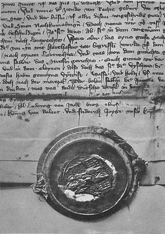

Początki osadnictwa sięgają III i IV w. n.e., gdy nad brzegiem morza istniała osada. W IX w. powstał tu port. W II połowie XIII w. w Pucku istniał gród kasztelański książąt wschodniopomorskich. Od 1309 we władaniu Krzyżaków, prawa miejskie chełmińskie uzyskał z rąk wielkiego mistrza krzyżackiego Dusemera w 1348. W ramach lokacji miasta wykonano na jego granicach fortyfikacje ziemne i palisadę, u schyłku XIV w. zastąpioną przez mur obronny oraz wytyczono parcele, które potem stopniowo zabudowywano, sieć ulic, a także rynek.
Podczas wojny trzynastoletniej (1454–1466) mieszczanie puccy stanęli po stronie Polski. W 1457 w Pucku znalazł schronienie wygnany król Szwecji Karol VIII Knutsson Bonde. W zamian za 15 tys. marek pruskich otrzymał w zastaw od Kazimierza Jagiellończyka Ziemię Pucką (980 km²). W 1460 Puck zdobyli Krzyżacy, a król szwedzki zbiegł do Gdańska, zaś w 1464 r. wojska gdańskie przez 5 miesięcy oblegały miasto, by w końcu wymusić kapitulację garnizonu krzyżackiego.
W 1466 włączono Puck do Prus Królewskich, będących od 1569 częścią Korony (wcześniej podlegały jej na zasadach autonomicznych). Siedziba starostwa powiatowego, miejsce sejmików szlacheckich i sądów grodzkich. Za czasów panowania Zygmunta Augusta, Batorego i Władysława IV Wazy twierdza i okresowo baza floty polskiej. Był pierwszym polskim portem wojennym.
PO WIĘCEJ INFORMACJI ZAPRASZAM NA WIKIPEDIĘ